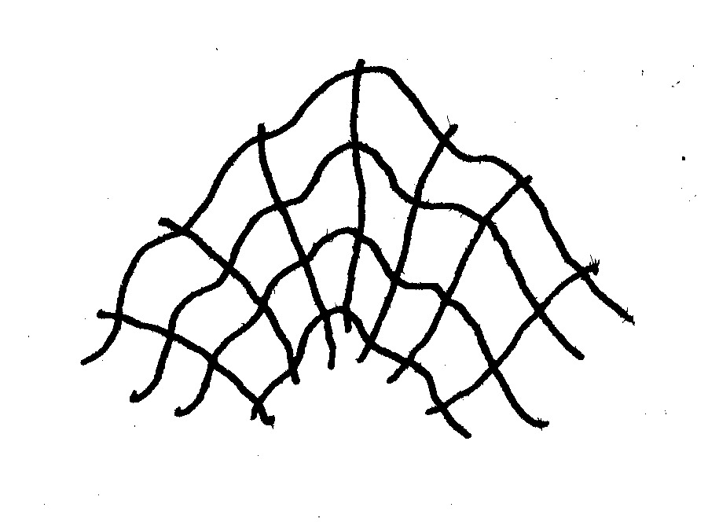

Matematiche del contagio, pratiche d’attenzione
biopolitica, Deleuze, immaginario, matematica, valutazione del rischio

[Mattia Galeotti per scienceground.it]
Vocabolario
Cominciamo introducendo tre termini che hanno riempito i dibattiti televisivi, i dialoghi nei talk show, i post sui social network: paziente zero, crescita esponenziale, picco epidemico.
Il paziente zero
La ricerca del paziente zero, già raccontata qui, è un esempio di ragionamento autoriferito. Non ha infatti l’obiettivo (né, spesso, la possibilità) di individuare questo “paziente originario”. Qual è quindi la sua funzione?
All’inizio del contagio il virus si espande ad albero: ad ogni individuo infetto è possibile associare una radice (colui che gli ha passato il virus) e vari germogli (le persone infettate). Seguire questa discendenza a ritroso si rivela più complicato mano a mano che l’epidemia cresce. Interromperla in un qualche punto è infine un’operazione arbitraria, perché è quasi impossibile dimostrare che un certo individuo sia stato proprio il primo a portare il virus in Italia. La ricerca dettagliata delle origini, per quanto fondata su un modello solido, comincia quindi a formulare cartografie sempre più vaghe e insicure, senza aggiungere reali contenuti. Perché lo fa? Perché siamo sicuri che ogni infetto italiano ha ricevuto il virus da un altro essere umano, e quindi la domanda “da chi?” può essere posta. Ma se la risposta a questa domanda è non-verificabile, la domanda stessa si riferisce solo a se stessa. Quando la pronunciamo stiamo solo ribadendo il modello dell’infezione come filiazione.
Una speculazione autoriferita e senza contenuto, assolve comunque una funzione: far percepire un controllo sul fenomeno. Nel panorama politico mediatico, la ricerca del paziente zero significa che l’albero del virus è ben definito; la possibilità di indicare le (presunte) radici del virus, significa che i decisori politici conoscono e sono in grado di gestire l’infezione.
Esponenziale
La crescita esponenziale è stata il secondo topos ad aver conquistato il campo mediatico. Una crescita esponenziale è molto rapida ed è caratterizzata dal suo tempo di raddoppio \(t\): se a un certo istante \(t_0\) il numero di infetti è \(N\), all’istante \(t_0+t\) sarà di \(2N\).
I processi epidemici nella loro fase iniziale seguono un andamento esponenziale, spieghiamo il perché: consideriamo un individuo infetto e supponiamo che questo abbia la capacità in condizioni normali di infettare R persone; ognuna di queste persone infetterà a sua volta altre R persone, portando il totale di infetti dopo due generazioni a \(R \cdot R=R^2\) (stiamo supponendo per semplicità che nel tempo di due generazioni i primi malati guariscano o muoiano). Dopo la terza generazione avremo \(R^3\) infetti, dopo la quarta \(R^4\) e così via… Ovviamente man mano che l’infezione avanza avremo due limiti ovvi (e molti altri meno ovvi) a questa modellizzazione semplificata:
i. esistono persone con molte meno interazioni di altre, sacche di “solitari” o “sedentari” con bassa capacità infettiva;
ii. le conoscenze potenzialmente infettate di due persone possono sovrapporsi (amicizie comuni), e questo diventa tanto più impattante sul modello quanto più aumenta il numero di infetti.
Passiamo al tampone. I metodi per la rivelazione dei malati non sono fatti con controlli casuali: si comincia dalle persone infette e si cerca nella loro cerchia di contatti; essere entrati in contatto con un individuo positivo è una condizione necessaria a ricevere il tampone. Questo metodo è efficace in situazioni d’emergenza, permette di identificare più malati con meno sforzo.
In conseguenza la crescita del numero dei tamponi segue anch’essa un andamento esponenziale: supponiamo che in una data zona la frazione di popolazione con il virus sia \(v\), partiamo da un individuo positivo che è entrato in contatto con \(Q\) persone; a questeQ persone viene fatto il tampone e \(v Q=R_1\) risultano positive. Saranno pertanto necessari \(Q\) tamponi per ognuna di queste, cioè \(v Q \cdot Q = v Q^2\), e di questi ancora \(v \cdot v Q^2=v^2 \cdot Q^2 = R_1^2\) saranno positivi. E così via \(R_1^3\) dopo tre generazioni, \(R_1^4\) dopo quattro, ecc.
Nell’ipotesi in cui il virus è, almeno in certe zone, già diffuso, il protocollo d’emergenza del SSN rileverà inevitabilmente un esponenziale. In che momento la rilevazione diventerà una buona descrizione del livello di diffusione del virus? Non è facile dirlo, i fattori sono molti (diffusione del virus, estensione della zona epidemica, condizioni di isolamento di certi territori,…). Un recente articolo dell’Imperial College COVID-19 Response Team fornisce una stima degli infetti con modelli di questo tipo: il risultato ha un’incertezza doppia rispetto al dato stimato (3%-26% con una stima del 9.8% di popolazione infetta); alcune ipotesi utilizzate nel paper sono inoltre di difficile verifica, come il trattamento di ogni paese in maniera isolata dagli altri (sull’isolamento di popolazioni più o meno omogenee torneremo nel paragrafo successivo).
La rilevazione (tramite test di positività al virus) di un andamento esponenziale, non permette di dire da quando è cominciata l’epidemia, e non ci permette nemmeno di asserire che quello rilevato sia il vero tasso di crescita dell’infezione.
Il picco
Il grafico mostra un’infezione in crescita vertiginosa, il dato raggiunge un massimo, e poi scende per avvicinarsi con lentezza ad un tasso di contagio nullo. Accanto a questa curva, ce n’è un’altra più smussata, come una collinetta larga accanto a una vetta montuosa alpina. «smussare la curva. rinviare il picco», questo il principio guida che ha segnato la prima fase dell’epidemia.
Il grafico appena descritto è la raffigurazione del processo di sviluppo delle malattie infettive: l’epidemia si propaga fino a saturare la popolazione, a un certo punto il tasso di crescita scende perché i guariti sono immuni dal virus, l’epidemia non può più espandersi e comincia a regredire fino a scomparire. Con misure di contenimento più o meno marcate, il tasso di crescita è fin dall’inizio più basso, quindi la saturazione della popolazione avviene più lentamente e il numero di persone presenti in ospedale nello stesso tempo, diminuisce.
L’ipotesi implicita è che tutta la popolazione sia interessata dal processo. Se però un fattore esterno interviene prima della saturazione della popolazione, la descrizione deve cambiare. È il caso dell’epidemia di spagnola del 1918-19: il sopraggiungere della stagione calda (e altri fattori) fece calare il tasso di contagiosità del virus fin quasi a debellarlo, ma con il ritorno dell’autunno un secondo picco colpì violentemente tutta Europa, perché il bacino di potenziali infetti era rimasto in parte separato dalla dinamica infettiva.
Cosa accade se le misure di quarantena separano segmenti di popolazione? Quando una popolazione molto colpita e una scarsamente colpita entrano di nuovo in contatto, il virus può ricominciare a espandersi. Il primo grafico descrive una situazione in cui il virus si muove in maniera omogenea, se invece alcuni focolai vengono isolati, bisognerà immaginare un secondo picco quando le barriere scompaiono, e magari anche altri picchi successivi.
La delimitazione di popolazioni potrebbe non essere solo geografica, ma riguardare segmenti di popolazione più o meno ricchi (chi è ricco può proteggersi meglio, non è costretto ad andare al lavoro, ecc.). Le questioni si moltiplicano: nell’ambiente della prigione, quando il virus entra ha una grande capacità di diffusione; tra città e campagna c’è una grande differenza di contagiosità; ecc.
Se la circolazione non rispetta le condizioni di omogeneità ipotizzate, la descrizione con un picco ben identificabile non è predittiva (se due popolazioni confinanti raggiungono il picco con una sfasatura temporale, potrebbero esserci effetti di “ritorno” che peggiorano la situazione). Insomma, il grafico del picco descrive una situazione con circolazione omogenea, ma questa condizione è modificata dalle stesse misure di quarantena che cercano di rinviare il picco.
- Nel caso del paziente zero, la descrizione è sicuramente vera, ma impossibile da ricostruire empiricamente.
- Nel caso dell’esponenziale, il formalismo dell’esponenziale è sicuramente verificato perché strutturale (nei primi giorni) al metodo di misura
- Infine nel caso del picco, il grafico descrive bene l’andamento se viene rispettata un’ipotesi di omogeneità, ma questa ipotesi può essere verificata solo in maniera circolare (autoriferita): quando il grafico è quello indicato -cioè senza rimbalzi nel tasso di contagiosità- allora l’ipotesi è rispettata.
Regime del significante
Questo meccanismo di segni che rinviano ad altri segni in maniera circolare, senza bisogno di ancorarsi ad un contenuto originale, rientra in quello che Deleuze e Guattari denominamo regime del significante in Millepiani. La descrizione, in questo regime linguistico, non è legata a una capacità predittiva del fenomeno.
Non stiamo dicendo che gli strumenti matematici sopra citati sono inutili, né per la descrizione emergenziale né sul lungo periodo. Ci soffermiamo però sul fatto che il loro utilizzo oggi, la loro frettolosa applicazione all’emergenza Covid, è in larga parte slegato dalla capacità predittiva.
La constatazione che “non stiamo (pre)dicendo nulla” però non basta, perché la sovrapproduzione di discorso ha una funzione sociale-linguistica: un certo paradigma semantico continua ad autoriprodursi nel momento della crisi, quando l’organizzazione sanitaria non è in grado di arginare l’epidemia. Non si tratta solo di errori di valutazione: in un mondo ad alta connettività il paradigma della cura-ospedaliera centralizzata, non sembra in grado di reggere le epidemie che quest’idea di globalità porta con sé. La sovrapproduzione discorsiva sembra voler “tenere insieme” un tessuto (quello che va dalla ricerca medica, al discorso sulla scienza, alla politica, all’organizzazione degli Stati) che si è rivelato inadeguato.
La catastrofe coronavirus non è di breve durata, ma si prolunga su settimane, quindi catastrofe e costruzione dell’emergenza (cioè di discorso sulla catastrofe) convivono.
Il discorso matematico autoriferito sembra volerci dire «ehi tranquilli, il nostro modo di pensare il mondo è ancora in grado di gestire la situazione: andrà tutto bene!». Ma questa profezia autoavverante non soddisfa: il problema è come ce la faremo, in quanti moriremo, a quale costo emotivo e psicologico, con quali conseguenze politiche ed etiche.
Sarebbe forse più potente per tutti constatare che la descrizione scientifica della situazione non produce senso. C’è uno spazio dell’attesa e in questo spazio va prodotto nuovo senso senza rinvii e senza affidarsi a un centro significante autoriferito.
In questo momento non esiste un governo dell’evento epidemico, ma solo un governo della popolazione durante l’epidemia.
Cittadini responsabiliti o sguardi d’attenzione?
Tra i luoghi più adatti a diffondere il virus troviamo ospedali, scuole e prigioni, siti che contengono nella loro stessa architettura un potere infettante.
I paradossi che nascono da una situazione del genere sono trasparenti. L’organizzazione della vita collettiva sembra ritorcersi contro se stessa: le stanze degli ospedali che diventano vettori del virus. E poi, i senza-casa o senza-permesso-di-soggiorno che violano gli ordini di confinamento, dovrebbero essere portati dalla polizia in galere più pericolose di qualsiasi riparo di fortuna? Quelle galere dove per ora è apparsa la più forte risposta contro la vita segregata della quarantena? Se qualcuno non ha soldi per mangiare, e in assembramento raggiunge un supermercato, gli sbirri dovrebbero staccare delle multe?
L’infettività degli ospedali viene dalla loro organizzazione ideologica: luoghi dove la cura si centralizza, dove si concentrano i referenti del sapere medico. Le persone -che per l’ospedale sono individui/pazienti separati gli uni dagli altri- vi convergono con le loro corporeità, entrano in contatto reciproco e per questo si ammalano. La cura pensata come processo industriale, diventa iatrogenetica in sé (la iatrogenesi è lo sviluppo di patologie causate da trattamenti medici).
Questo fatto assume il valore di metafora: la Società oggi è il referente universale che organizza tanti io separati, responsabili e produttivi; produttivi perché responsabili e separati. Il virus manda in contraddizione questa binarietà (io-Società): i governanti chiedono responsabilità, ma per far sopravvivere la totalità condivisa devono continuamente organizzare alcuni fattori di rischio, come la distribuzione del cibo o l’attività manufatturiera.
Nei primi giorni di pericolo e paura, questa contraddizione è stata poco evidente. Con la “fase 2” diventerà più lampante che le attività necessarie alla sopravvivenza dell’economia (ma ci diranno «di tutti noi») convivono con una continua responsabilizzazione individuale: andate al lavoro, ma con la mascherina! Andate nei supermercati a comprarvi il cibo, ma poi non fate aperitivo nei parchi! Certo potete raggiungere i “congiunti”, ma solo se imparentati! Andate in ospedale se state male, ma non chiamate nessuno al vostro capezzale! Queste contraddizioni si aggiungeranno alle regole diseguali regione per regione, alle zone vaghe del diritto su cui differenti autorità rivendicheranno delle decisioni.
In questa confusione il terreno a cui saremo quotidianamente confrontati sarà quello dell’attenzione, un concetto ben diverso da responsabilità: l’attenzione è contingente, capace di confrontare fattori sanitari con fattori psicologi e desideri specifici. L’attenzione parte dalle relazioni specifiche, un incontro, una spesa al supermercato, una situazione di possibile malattia,… e ridefinisce continuamente i propri principi guida a partire dal contesto in cui è calata. La responsabilità al contrario rimanda a un principio regolatore, un protocollo cui affidarsi. In questi giorni ci rendiamo conto che un protocollo unico non solo è inesistente, ma anche impensabile: ogni pretesa di afferrare il fenomeno-coronavirus – che sia dal punto di vista scientifico sanitario o legislativo – si rivela uno stratagemma narrativo funzionale al governo della popolazione e della produzione.
Come tradurre in azione collettiva questa centralità dell’attenzione, rispetto all’ossessione per la responsabilità?
Protocolli decentralizzati, da poter fare casa per casa; impegno nella ricerca di soluzioni non ospedaliere, potenziamento dei ruoli intermedi tra medico e paziente e di tutte le professioni sanitarie; quotidiane decisioni comunitarie, sul tipo di attività da riprendere e su quelle da fermare, sugli svaghi da tutelare. Lo scarto tra individuo e Società è pieno, è lo spazio dove realmente avviene la vita: questo spazio va riempito, e va fatto adesso, nel momento in cui la produzione prova a ripartire senza rimettere in discussione i suoi fondamenti infetti.
Bisogna portare attenzione a ciò che c’è di infetto nei comportamenti normali, alle maniere organizzate in cui lo Stato diffonde il virus; dobbiamo impegnarci perché l’ossessione verso i gesti individuali passi in secondo piano rispetto alla ri-organizzazione di abitudini collettive.
La peculiarità di una politica dell’attenzione è quella di trasferire a strutture territoriali i saperi scientifici, l’organizzazione della cura, la scelta su ciò che è urgente e desiderabile.
In molti casi la differenza tra attenzione e responsabilità sembra un sofismo. Il terreno che porterà allo scoperto la biforcazione dei due significati sarà quello del monitoraggio. L’esigenza di centralizzare una presa di dati sul virus appartiene infatti al calcolo economico. La possibilità di approfondire il proprio stato di salute non va confusa con il controllo pervasivo. Sappiamo che dovremo convivere col virus e con un’idea di infezione latente nell’organizzazione del mondo: in questo scenario, cura significa attenzione ai gesti, strategie di controllo personali e interpersonali. Le soluzioni finali governative avranno sempre uno stretto legame con la presa di dati, per ristabilire un piano di significazione, e dunque di valorizzazione: distinguere il controllo centralizzante dai gesti di cura, e dalla loro organizzazione locale, sarà tra le sfide politiche centrali dei prossimi anni.